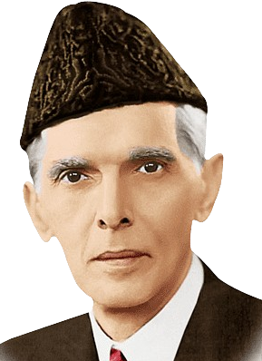

QUAID-E-AZAM MUHAMMAD ALI JINNAH
(1876)-(1948)
"The man who dedicated his life to the welfare of the people of the subcontinent"
"There are two powers in the world; one is the sword and the other is the pen. "
- QUAID- E -AZAM
-Muhammad Ali Jinnah was a lawyer, politician, and the founder of Pakistan.
Here's a time line of Quaid-e-Azam life:
Sure, here's a simplified timeline of Quaid-e-Azam Muhammad Ali Jinnah's life:
- **1876**: Born in Karachi, Pakistan.
- **1893**: Family moved to Bombay (Mumbai).
- **1895**: Became the youngest Indian called to the bar in England at 19.
- **1895**: Became the youngest Indian called to the bar in England at 19.
- **1896**: Started practicing law in Bombay, becoming the only Muslim barrister there.
- **1900**: Became the Bombay presidency magistrate.
- **1906**: Joined the Indian National Congress.
- -**1907**: Gained fame for his handling of the 1907 "Caucus Case".
- **1909**: Won his first elective office using separate electorates for Muslims.
- **1911**: Introduced the Wakf Validation Act.
- **1912**: Addressed the Muslim League annual meeting.
- **1913**: Joined the All-India Muslim League.
- **1916**: Became President of the Muslim League.
- **1920**: Left the Indian National Congress.
- **1934**: Elected as the representative of Muslims of Bombay to the Central Legislative Assembly.
- **1937**: Failed attempt to form a coalition government with Congress in the United Provinces.
- **1944**: Formal meeting with Gandhi.
- **1946**: Muslim League's significant win in provincial elections.
- **1947**: Recommended as Pakistan's first governor-general.
- **1947**: Dissolved the elected government within a week of becoming governor-general.
- **1948**: India agreed to pay Pakistan its share of assets.
- **1948**: Died on September 11, 1948, in Karachi at the age of 71, just over a year after Pakistan's creation.
"With faith, discipline and selfless devotion to duty, there is nothing worthwhile that you cannot achieve. "
- QUAID- E -AZAM